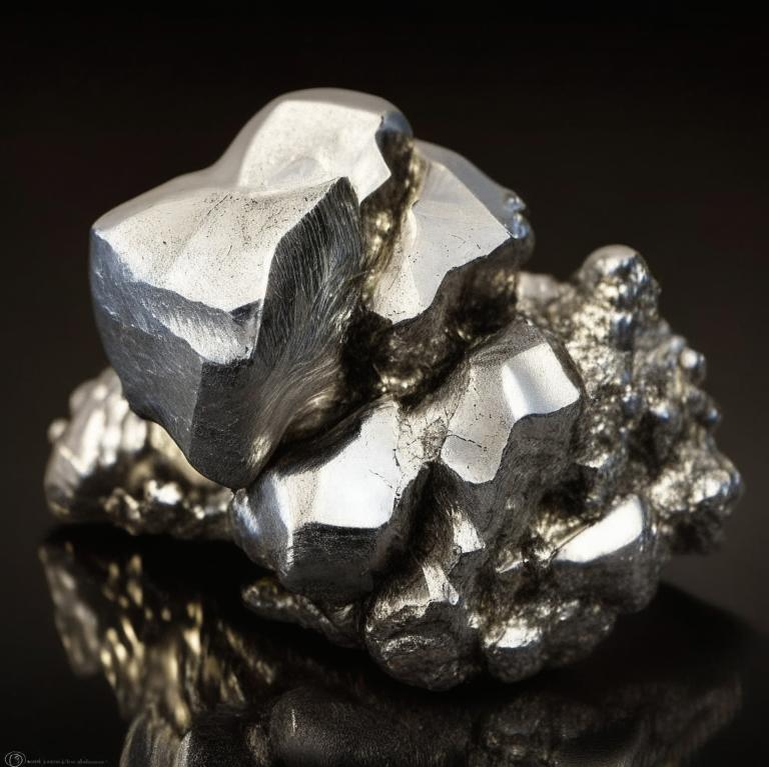

Борий
Бо́рий (лат. Bohrium, обозначается символом Bh, ранее Уннилсéптий, Unnilseptium, Uns, или эка-рений) — нестабильный радиоактивный химический элемент с атомным номером 107. Известны изотопы с массовыми числами от 261 до 274. Наиболее стабильный изотоп из полученных — борий-267 с периодом полураспада 17 с.

Впервые изотоп 262Bh в количестве нескольких атомов получен в 1981 г. (Дармштадт, Германия) бомбардировкой в циклотроне 209Bi ускоренными ионами 54Cr.
Элемент имеет сложную структуру и синтезируется только в специальных условиях.Элемент имеет множество свойств, которые могут быть использованы для производства различных материалов и продуктов.